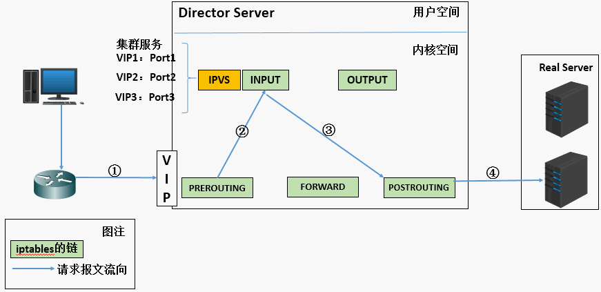
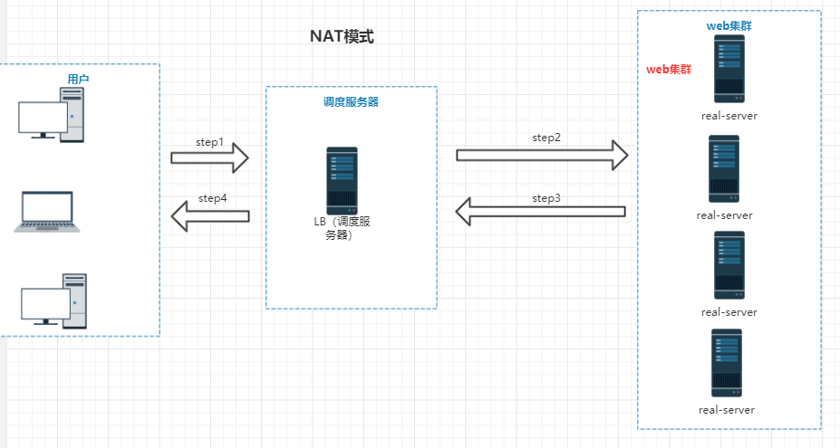
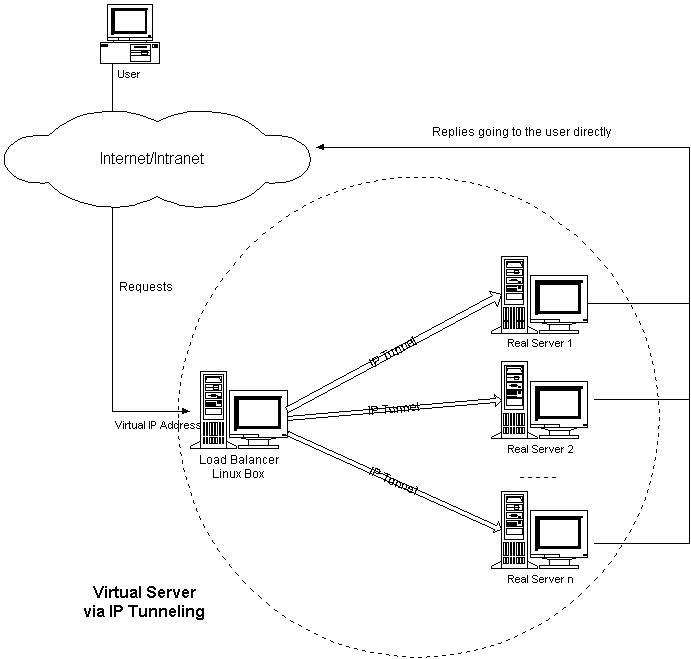

负载均衡集群是 load balance 集群的简写，翻译成中文就是负载均衡集群。常用的负载均衡开源软件有nginx、lvs、haproxy，商业的硬件负载均衡设备F5、Netscale。这里主要是学习 LVS 并对其进行了详细的总结记录。
集群
- 集群：cluster
**很多台机器做一样事情（提供一样的功能）** - nginx默认是处理1024个并发
- 如果用户增多
- 增加硬件
- 32G
- 4core
- 200G
- 10M
- 集群
- 增加硬件
- 如果用户增多
- 集群：
1.成本 2.性能 3.稳定性--》是否需要停止服务 4.高可用型--》优势 5.维护方面 6.扩展性--》再加、减
LVS
LB集群的架构和原理很简单，就是当用户的请求过来时，会直接分发到Director Server上，然后它把用户的请求根据设置好的调度算法，智能均衡地分发到后端真正服务器(real server)上。为了避免不同机器上用户请求得到的数据不一样，需要用到了共享存储，这样保证所有用户请求的数据是一样的。
含义
LVS的基本工作原理
- 
- 1. 当用户向负载均衡调度器（Director Server）发起请求，调度器将请求发往至内核空间
2. PREROUTING链首先会接收到用户请求，判断目标IP确定是本机IP，将数据包发往INPUT链
3. IPVS是工作在INPUT链上的，当用户请求到达INPUT时，IPVS会将用户请求和自己已定义好的集群服务进行比对，如果用户请求的就是定义的集群服务，那么此时IPVS会强行修改数据包里的目标IP地址及端口，并将新的数据包发往POSTROUTING链
4. POSTROUTING链接收数据包后发现目标IP地址刚好是自己的后端服务器，那么此时通过选路，将数据包最终发送给后端的服务器
LVS相关术语
\1. DS：Director Server。指的是前端负载均衡器节点。
\2. RS：Real Server。后端真实的工作服务器。
\3. VIP：向外部直接面向用户请求，作为用户请求的目标的IP地址。
\4. DIP：Director Server IP，主要用于和内部主机通讯的IP地址。
\5. RIP：Real Server IP，后端服务器的IP地址。
\6. CIP：Client IP，访问客户端的IP地址。下边是三种工作模式的原理和特点总结。
LVS的三种模式
NAT—》比较简单
Virtual Server via Network Address Translation（VS/NAT）–》NAT
通过网络地址转换，调度器重写请求报文的目标地址，根据预设的调度算法，将请求分派给后端的真实服务器；真实服务器的响应报文通过调度器时，报文的源地址被重写，再返回给客户，完成整个负载调度过程。

(a). 当用户请求到达Director Server，此时请求的数据报文会先到内核空间的PREROUTING链。 此时报文的源IP为CIP，目标IP为VIP
(b). PREROUTING检查发现数据包的目标IP是本机，将数据包送至INPUT链
(c). IPVS比对数据包请求的服务是否为集群服务，若是，修改数据包的目标IP地址为后端服务器IP，然后将数据包发至POSTROUTING链。 此时报文的源IP为CIP，目标IP为RIP
(d). POSTROUTING链通过选路，将数据包发送给Real Server
(e). Real Server比对发现目标为自己的IP，开始构建响应报文发回给Director Server。 此时报文的源IP为RIP，目标IP为CIP
(f). Director Server在响应客户端前，此时会将源IP地址修改为自己的VIP地址，然后响应给客户端。 此时报文的源IP为VIP，目标IP为CIP
NAT模式特性：
- RS应该使用私有地址，RS的网关必须指向DIP
- DIP和RIP必须在同一个网段内
- 请求和响应报文都需要经过Director Server，高负载场景中，Director Server易成为性能瓶颈
- 支持端口映射
- RS可以使用任意操作系统
- 缺陷：对Director Server压力会比较大，请求和响应都需经过director server
tunnel:隧道模式 –》用的不多
- Virtual Server via IP Tunneling（VS/TUN）–>隧道–》tunnel
采用N AT技术时，由于请求和响应报文都必须经过调度器地址重写，当客户请求越来越多时，调度器的处理能力将成为瓶颈。为了解决这个问题，调度器把请求报 文通过IP隧道转发至真实服务器，而真实服务器将响应直接返回给客户，所以调度器只处理请求报文。由于一般网络服务应答比请求报文大许多，采用 VS/TUN技术后，集群系统的最大吞吐量可以提高10倍。
- Virtual Server via IP Tunneling（VS/TUN）–>隧道–》tunnel

在原有的IP报文外再次封装多一层IP首部，内部IP首部(源地址为CIP，目标IIP为VIP)，外层IP首部(源地址为DIP，目标IP为RIP)

(a) 当用户请求到达Director Server，此时请求的数据报文会先到内核空间的PREROUTING链。 此时报文的源IP为CIP，目标IP为VIP 。
(b) PREROUTING检查发现数据包的目标IP是本机，将数据包送至INPUT链
(c) IPVS比对数据包请求的服务是否为集群服务，若是，在请求报文的首部再次封装一层IP报文，封装源IP为为DIP，目标IP为RIP。然后发至POSTROUTING链。 此时源IP为DIP，目标IP为RIP
(d) POSTROUTING链根据最新封装的IP报文，将数据包发至RS（因为在外层封装多了一层IP首部，所以可以理解为此时通过隧道传输）。 此时源IP为DIP，目标IP为RIP
(e) RS接收到报文后发现是自己的IP地址，就将报文接收下来，拆除掉最外层的IP后，会发现里面还有一层IP首部，而且目标是自己的lo接口VIP，那么此时RS开始处理此请求，处理完成之后，通过lo接口送给eth0网卡，然后向外传递。 此时的源IP地址为VIP，目标IP为CIP
(f) 响应报文最终送达至客户端
LVS-Tun模型特性
- RIP、VIP、DIP全是公网地址
- RS的网关不会也不可能指向DIP
- 所有的请求报文经由Director Server，但响应报文必须不能进过Director Server
- 不支持端口映射
- RS的系统必须支持隧道
直接路由(DR)—》性能好，速度快
Virtual Server via Direct Routing（VS/DR）—》直接路由（DR）
VS/DR通过改写请求报文的MAC地址，将请求发送到真实服务器，而真实服务器将响应直接返回给客户。同VS/TUN技术一样，VS/DR技术可极大地 提高集群系统的伸缩性。这种方法没有IP隧道的开销，对集群中的真实服务器也没有必须支持IP隧道协议的要求，但是要求调度器与真实服务器都有一块网卡连 在同一物理网段上。
重将请求报文的目标MAC地址设定为挑选出的RS的MAC地址
 ·
·(a) 当用户请求到达Director Server，此时请求的数据报文会先到内核空间的PREROUTING链。 此时报文的源IP为CIP，目标IP为VIP
(b) PREROUTING检查发现数据包的目标IP是本机，将数据包送至INPUT链
(c) IPVS比对数据包请求的服务是否为集群服务，若是，将请求报文中的源MAC地址修改为DIP的MAC地址，将目标MAC地址修改RIP的MAC地址，然后将数据包发至POSTROUTING链。 此时的源IP和目的IP均未修改，仅修改了源MAC地址为DIP的MAC地址，目标MAC地址为RIP的MAC地址
(d) 由于DS和RS在同一个网络中，所以是通过二层来传输。POSTROUTING链检查目标MAC地址为RIP的MAC地址，那么此时数据包将会发至Real Server。
(e) RS发现请求报文的MAC地址是自己的MAC地址，就接收此报文。处理完成之后，将响应报文通过lo接口传送给eth0网卡然后向外发出。 此时的源IP地址为VIP，目标IP为CIP
(f) 响应报文最终送达至客户端
LVS-DR模型的特性
- 特点1：保证前端路由将目标地址为VIP报文统统发给Director Server，而不是RS
- RS可以使用私有地址；也可以是公网地址，如果使用公网地址，此时可以通过互联网对RIP进行直接访问
- RS跟Director Server必须在同一个物理网络中
- 所有的请求报文经由Director Server，但响应报文必须不能进过Director Server
- 不支持地址转换，也不支持端口映射
- RS可以是大多数常见的操作系统
- RS的网关绝不允许指向DIP(因为我们不允许他经过director)
- RS上的lo接口配置VIP的IP地址
- 缺陷：RS和DS必须在同一机房中
特点1的解决方案：
- 在前端路由器做静态地址路由绑定，将对于VIP的地址仅路由到Director Server
- 存在问题：用户未必有路由操作权限，因为有可能是运营商提供的，所以这个方法未必实用
- arptables：在arp的层次上实现在ARP解析时做防火墙规则，过滤RS响应ARP请求。这是由iptables提供的
- 修改RS上内核参数（arp_ignore和arp_announce）将RS上的VIP配置在lo接口的别名上，并限制其不能响应对VIP地址解析请求。
总结：
- 其实企业中最常用的是 DR 实现方式，而 NAT 配置上比较简单和方便，后边实践中会总结 DR 和 NAT 具体使用配置过程。
8种负载调度算法
针对不同的网络服务需求和服务器配置，IPVS调度器实现了如下八种负载调度算法
轮叫/轮询（Round Robin）rr
- 调度器通过”轮叫”调度算法将外部请求按顺序轮流分配到集群中的真实服务器上，它均等地对待每一台服务器，而不管服务器上实际的连接数和系统负载。
- 简称”RR”
加权轮叫（Weighted Round Robin）wrr
- 调度器通过”加权轮叫”调度算法根据真实服务器的不同处理能力来调度访问请求。这样可以保证处理能力强的服务器处理更多的访问流量。调度器可以自动问询真实服务器的负载情况，并动态地调整其权值。
- 简称“WRR”
最小链接（Least Connections）lc
- 调度器通过”最少连接”调度算法动态地将网络请求调度到已建立的链接数最少的服务器上。如果集群系统的真实服务器具有相近的系统性能，采用”最小连接”调度算法可以较好地均衡负载。
加权最少链接（Weighted Least Connections） wlc
- 在集群系统中的服务器性能差异较大的情况下，调度器采用”加权最少链接”调度算法优化负载均衡性能，具有较高权值的服务器将承受较大比例的活动连接负载。调度器可以自动问询真实服务器的负载情况，并动态地调整其权值。
基于局部性的最少链接（Locality-Based Least Connections）lblc
- “基于局部性的最少链接” 调度算法是针对目标IP地址的负载均衡，目前主要用于Cache集群系统。该算法根据请求的目标IP地址找出该目标IP地址最近使用的服务器，若该服务器 是可用的且没有超载，将请求发送到该服务器；若服务器不存在，或者该服务器超载且有服务器处于一半的工作负载，则用”最少链接”的原则选出一个可用的服务 器，将请求发送到该服务器。
带复制的基于局部性最少链接（Locality-Based Least Connections with Replication）lblcr
- “带复制的基于局部性最少链接”调度算法也是针对目标IP地址的负载均衡，目前主要用于Cache集群系统。它与LBLC算法的不同之处是它要维护从一个 目标IP地址到一组服务器的映射，而LBLC算法维护从一个目标IP地址到一台服务器的映射。该算法根据请求的目标IP地址找出该目标IP地址对应的服务 器组，按”最小连接”原则从服务器组中选出一台服务器，若服务器没有超载，将请求发送到该服务器，若服务器超载；则按”最小连接”原则从这个集群中选出一 台服务器，将该服务器加入到服务器组中，将请求发送到该服务器。同时，当该服务器组有一段时间没有被修改，将最忙的服务器从服务器组中删除，以降低复制的 程度。
目标地址散列（Destination Hashing）dh
- “目标地址散列”调度算法根据请求的目标IP地址，作为散列键（Hash Key）从静态分配的散列表找出对应的服务器，若该服务器是可用的且未超载，将请求发送到该服务器，否则返回空。
源地址散列（Source Hashing） sh
- “源地址散列”调度算法根据请求的源IP地址，作为散列键（Hash Key）从静态分配的散列表找出对应的服务器，若该服务器是可用的且未超载，将请求发送到该服务器，否则返回空。
NAT模式的LVS负载均衡使用
安装
ipvsadm 是一个给lvs软件传递参数和查看相关信息的工具
1
[root@LB ~]# yum install ipvsadm
关闭防火墙和selinux
1
2
3
4
5
6
7
8
9
10
11
12
13
14
15
16
17
18
19
20
21[root@LB ~]# iptables -F
[root@LB ~]# service firewalld stop
Redirecting to /bin/systemctl stop firewalld.service
[root@LB ~]# getenforce
Enforcing
[root@LB ~]# setenforce 0
[root@LB ~]# getenforce
Permissive514、
[root@LB ~]#
[root@LB ~]# iptables -L
Chain INPUT (policy ACCEPT)
target prot opt source destination
Chain FORWARD (policy ACCEPT)
target prot opt source destination
Chain OUTPUT (policy ACCEPT)
target prot opt source destination
[root@LB ~]# getenforce
Permissive
[root@LB ~]#
- 1
2
3
4
5
6
7
8
9
10
11
12
13
14
15
16
17
18
19
20
21
22
23
24
25
26
27
28
29
30
31
32
33
34
35
36
37
38
39
40
41
42
43
44
45
46
47
48
49
50
[root@LB ~]# cat lvs_nat.sh
#! /bin/bash
# director 服务器上开启路由转发功能
echo 1 > /proc/sys/net/ipv4/ip_forward
# director 设置nat防火墙
iptables -t nat -F
iptables -t nat -X
iptables -t nat -A POSTROUTING -s 192.168.80.0/24 -o ens33 -j SNAT --to-source 192.168.0.205
# director设置ipvsadm
IPVSADM='/usr/sbin/ipvsadm'
$IPVSADM -C
#清空规则
$IPVSADM -A -t 192.168.0.205:80 -s rr
# rr为轮询
$IPVSADM -a -t 192.168.0.205:80 -r 192.168.80.2:80 -m
# -a增加服务器 -m表示LVS模式为NAT
$IPVSADM -a -t 192.168.0.205:80 -r 192.168.80.3:80 -m
# -r指定服务器IP
[root@LB ~]#
[root@LB ~]# ipvsadm -l
IP Virtual Server version 1.2.1 (size=4096)
Prot LocalAddress:Port Scheduler Flags
-> RemoteAddress:Port Forward Weight ActiveConn InActConn
TCP LB:http rr
-> 192.168.80.2:http Masq 1 12 5
-> 192.168.80.3:http Masq 1 9 10
[root@LB ~]#
[root@LVS lvs]# iptables -L -t nat -vn
#查看ipvsadm设置的规则
[root@LVS lvs]# ipvsadm -ln
IP Virtual Server version 1.2.1 (size=4096)
Prot LocalAddress:Port Scheduler Flags
-> RemoteAddress:Port Forward Weight ActiveConn InActConn
TCP 192.168.1.163:80 rr
-> 192.168.70.1:80 Masq 1 0 0
-> 192.168.70.2:80 Masq 1 0 1
[root@LVS lvs]#
DR模式
DR模式的问题：
数据包经过调度器是否修改ip包里的源ip和目的ip？
答案：不修改- DR主要改的是帧
调度器是如何把数据送给选中的real server的？
arp协议—》又聋又哑
修改数据帧–》源mac和目的mac地址 –》交换机的工作原理
所有real server互相之间不通信的，也不知道外面的世界，只是提供服务交换机转发数据的依据：看帧的目的mac –》mac地址表–》内存里–》老化时间
arp协议：地址解析协议 ：将ip地址解析到对应的mac地址
变聋：real server 不接受别人发来的arp广播
变哑：reals server 不主动告诉别人自己的信息操作
安装
1
2
3
4
5两个 real server 上都安装 nginx 服务
# yum install -y nginx
Director 上安装 ipvsadm
# yum install -y ipvsadm
操作
1
2
3
4
5
6
7
8
9
10
11
12
13
14
15
16
17
18
19
20
21
22
23
24
25
26
27
28
29
30
31
32
33
34
35[root@LVS lvs]# ipvsadm -A -t 192.168.1.163:80 -s wrr #wrr是加权轮询
[root@LVS lvs]# ipvsadm -a -t 192.168.1.163:80 -r 192.168.70.1:80 -m -w 2
[root@LVS lvs]# ipvsadm -a -t 192.168.1.163:80 -r 192.168.70.2:80 -m -w 1
[root@LVS lvs]# ipvsadm -ln
IP Virtual Server version 1.2.1 (size=4096)
Prot LocalAddress:Port Scheduler Flags
-> RemoteAddress:Port Forward Weight ActiveConn InActConn
TCP 192.168.1.163:80 wrr
-> 192.168.70.1:80 Masq 2 0 3
-> 192.168.70.2:80 Masq 1 0 5
[root@LVS lvs]#
[root@LVS lvs]# ipvsadm -A -t 192.168.1.163:80 -s wrr
[root@LVS lvs]# ipvsadm -a -t 192.168.1.163:80 -r 192.168.70.2:80 -m -w 5
[root@LVS lvs]# ipvsadm -a -t 192.168.1.163:80 -r 192.168.70.1:80 -m -w 1
[root@LVS lvs]# ipvsadm -ln
IP Virtual Server version 1.2.1 (size=4096)
Prot LocalAddress:Port Scheduler Flags
-> RemoteAddress:Port Forward Weight ActiveConn InActConn
TCP 192.168.1.163:80 wrr
-> 192.168.70.1:80 Masq 1 7 5
-> 192.168.70.2:80 Masq 5 3 5
[root@LVS lvs]#
[root@localhost lvs]# cat ipvsadm.sh
echo 1 > /proc/sys/net/ipv4/ip_forward
iptables -t nat -F
iptables -t nat -X
iptables -t nat -A POSTROUTING -s 192.168.80.0/24 -o ens33 -j SNAT --to-source 192.168.0.205
ipvsadm -C
ipvsadm -A -t 192.168.1.163:80 -s wrr
ipvsadm -a -t 192.168.1.163:80 -r 192.168.70.2:80 -m -w 5
ipvsadm -a -t 192.168.1.163:80 -r 192.168.70.1:80 -m -w 1
[root@localhost lvs]#
lvs结合keepalive
LVS可以实现负载均衡，但是不能够进行健康检查，比如一个rs出现故障，LVS 仍然会把请求转发给故障的rs服务器，这样就会导致请求的无效性。keepalive 软件可以进行健康检查，而且能同时实现 LVS 的高可用性，解决 LVS 单点故障的问题，其实 keepalive 就是为 LVS 而生的。
1、实验环境
4台节点
- Keepalived1 + lvs1(Director1)：192.168.0.48
- Keepalived2 + lvs2(Director2)：192.168.0.58
- Real server1：192.168.0.18
- Real server2：192.168.0.28
- IP: 192.168.0.38
2、安装系统软件
Lvs + keepalived的2个节点安装
1
# yum install ipvsadm keepalived -y
Real server + nginx服务的2个节点安装
1
2# yum install epel-release -y
# yum install nginx -y3、设置配置脚本
Real server节点2台配置脚本：

1
2
3
4
5
6
7
8
9
10
11
12# vim /usr/local/sbin/lvs_dr_rs.sh
#! /bin/bash
vip=192.168.0.38
ifconfig lo:0 $vip broadcast $vip netmask 255.255.255.255 up
route add -host $vip lo:0
echo "1" >/proc/sys/net/ipv4/conf/lo/arp_ignore
echo "2" >/proc/sys/net/ipv4/conf/lo/arp_announce
echo "1" >/proc/sys/net/ipv4/conf/all/arp_ignore
echo "2" >/proc/sys/net/ipv4/conf/all/arp_announce
2节点rs 上分别执行脚本：
bash /usr/local/sbin/lvs_dr_rs.sh
keepalived节点配置(2节点)：
1
2
3
4
5
6
7
8
9
10
11
12
13
14
15
16
17
18
19
20
21
22
23
24
25
26
27
28
29
30
31
32
33
34
35
36
37
38
39
40
41
42
43
44主节点( MASTER )配置文件
vim /etc/keepalived/keepalived.conf
vrrp_instance VI_1 {
state MASTER
interface eth0
virtual_router_id 51
priority 100
advert_int 1
authentication {
auth_type PASS
auth_pass 1111
}
virtual_ipaddress {
192.168.0.38
}
}
virtual_server 192.168.0.38 80 {
delay_loop 6
lb_algo rr
lb_kind DR
persistence_timeout 0
protocol TCP
real_server 192.168.0.18 80 {
weight 1
TCP_CHECK {
connect_timeout 10
nb_get_retry 3
delay_before_retry 3
connect_port 80
}
}
real_server 192.168.0.28 80 {
weight 1
TCP_CHECK {
connect_timeout 10
nb_get_retry 3
delay_before_retry 3
connect_port 80
}
}
}从节点( BACKUP )**配置文件**
拷贝主节点的配置文件keepalived.conf，然后修改如下内容：
1
2state MASTER -> state BACKUP
priority 100 -> priority 90keepalived的2个节点执行如下命令，开启转发功能：
1
# echo 1 > /proc/sys/net/ipv4/ip_forward
4、启动keepalive
1
2先主后从分别启动keepalive
service keepalived start5、验证结果
实验1
手动关闭192.168.0.18节点的nginx，service nginx stop 在客户端上去测试访问 http://192.168.0.38 结果正常，不会出现访问18节点，一直访问的是28节点的内容。
实验2
手动重新开启 192.168.0.18 节点的nginx， service nginx start 在客户端上去测试访问 http://192.168.0.38 结果正常，按照 rr 调度算法访问18节点和28节点。
实验3
测试 keepalived 的HA特性，首先在master上执行命令 ip addr ，可以看到38的vip在master节点上的；这时如果在master上执行 service keepalived stop 命令，这时vip已经不再master上，在slave节点上执行 ip addr 命令可以看到 vip 已经正确漂到slave节点，这时客户端去访问 http://192.168.0.38 访问依然正常，验证了 keepalived的HA特性。
问题
LB（又称“调度服务器”）怎么知道real server里需要处理多少连接数？
dns轮询算法的缺点：
1.主动权在dns服务器手里
2.dns解析记录有缓存–》ttl时间
3.如果服务器出现问题，曾经访问过这个服务器的客户机仍然去继续访问这个ip地址，导致网站访问不了nginx和lvs做负载均衡的区别
问题：
1
2
3
4[root@LVS lvs]# bash lvs_nat.sh
Memory allocation problem
Memory allocation problem
Memory allocation problem因为脚本里是从网页上复制粘贴过来的，每行里有多余空格导致出现这个问题–》字符问题导致
[root@LVS lvs]#
参考文章
其他
##适用性
后端服务器可运行任何支持TCP/IP的操作系统，包括Linux，各种Unix（如FreeBSD、Sun Solaris、HP Unix等），Mac/OS和Windows NT/2000等。
- 负载调度器能够支持绝大多数的TCP和UDP协议：
协议 内 容
TCP HTTP，FTP，PROXY，SMTP，POP3，IMAP4，DNS，LDAP，HTTPS，SSMTP等
UDP DNS，NTP，ICP，视频、音频流播放协议等
无需对客户机和服务器作任何修改，可适用大多数Internet服务。
#DR模式
临时添加ip地址
lvs NAT模式的实验